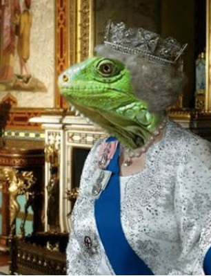
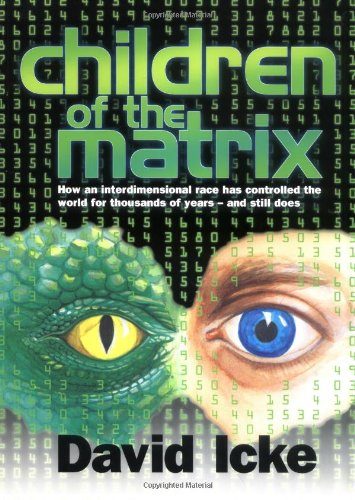

An English conspiracy theorist and a former footballer and sports broadcaster. He has written
over 20 books, self-published since the mid-1990s, and spoken in more than 25 countries.

Portrait of Queen Elizabeth II
Finally! The cracks are starting to show in the Royal Family's thinly veiled attempt to mask their true
reptilian form. The royals have long been known to be
descendants of an ancient reptilian race, possibly from the same planet as the home to the scientologist diety
"Xenu". For generations, they have been amassing
great wealth and power and have learned, albeit in a crude interpretation, to take the human form. But now eye
witnesses have now confirmed the long known fact of their
ability to scale walls, confirmed by no other than Queen Elizabeth herself.
She was climbing the banquet walls of Buckingham palace!
The eyewitness to this event states it happened on one of their "regular visits" to Buckingham Palace in which
they perform a special advisory role for the royal family.
The witness recounts that whilst briefing Prince Charles on the latest developments with the New World Order,
he noticed something "quite peculiar." In the background to their meeting
the witness claims he saw no other than Queen Elizabeth, but 30 feet above their heads! "She was climbing the
banquet walls of Buckingham palace!"
The source of this bombshell would rather not be named for fear of a retaliation from the monarchy, but has
assured us that they posses many more "mind-altering facts
that give new shape to this thing we call life".
What are the true motivations of this reptilian species, is it world domination? In need of a host species to
lay their eggs in? The answer has still not revealed itself to us,
however, the clues may have already been laid out before us just waiting to be deciphered and in my new and
groundbreaking book "Children of the Matrix", available online and in (select) retail stores,
I do just that.

Children of the Matrix by David Icke